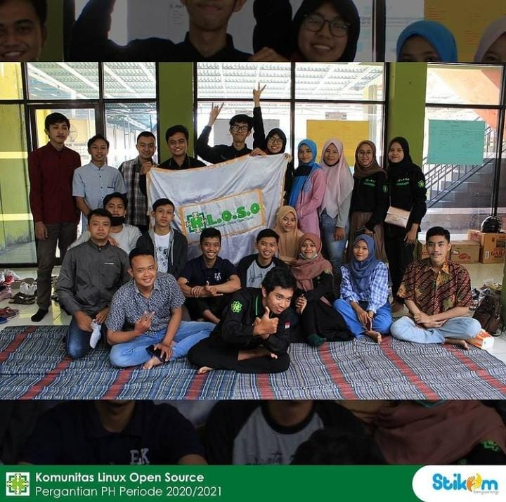

Nama : Lisa Dwi Wahyuni
Tempat tanggal lahir : Banyuwangi, 10 Agustus 2001
Jenis kelamin : Wanita
Alamat : Jl. Ikan wader pari no.106 kelurahan Karangrejo
Riwayat Pendidikan
No.
Jenjang Pendidikan
Tahun
1.
TK Dharma Wanita
2007-2008
2.
MI Darun Najah II
2008-2014
3.
SMPN 2 Banyuwangi
2014-2017
4.
SMAN 1 Banyuwangi
2017-2020
5.
STIKOM PGRI Banyuwangi
2020-Saat ini
Pengalaman Organisasi

Pergantian Pengurus Harian Periode 2020/2021UKM KLOSO
Setting Jaringan Internet
Pembinaan Setting Jaringan Internet di RTH Kecamatan Songgon
Sebagai Pantia acara sekaligus peserta, saya dapat membuat laporan pertanggung jawaban kegitan sekaligus saya dapat mengetahui Setting Jaringan Internet.
GitHub
Pembinaan GitHub di STIKOM PGRI Banyuwangi Ruang 3.3
Saya dapat mengoperasikan repositori GitHub dengan semestinya.
Hard Skill
Membuat laporan pertanggung jawaban kegiatan
Dapat menentukan IP addres dan mengatur subnetting
Dapat melakukan crimping kabel
Dapat melakukan sharring antar PC dan settin mikrotik
Dapat mengkonfigurasi mikrotik, membuat hospot, dan memblok website